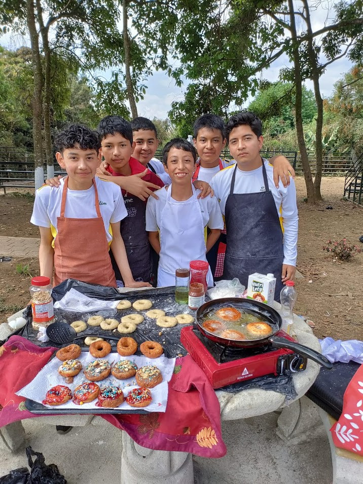

Brandon Angelo Alvarez Zet
Estudiante de bachillerato en computacion
🧧 Brandonalvarez@gmail.com | 📱 +502 46285747 | 📍San Lucas Sacatepequez
Perfil Profesional
Apasionado por la tecnogia y el desarrolo de sowtware,
con habilidades en programacion, diseño web
y analisis de datos.
Busco aoportunidades para aplicar mis conocimientos
y crecer profesionalmente en el campo de la informacion
Educacion
-
1ro basico
Telesecundaria el Manzanillo San Lucas Sacatepequez 2023
- 2do basico
Liceo Cristiano Elim San Lucas Sacatepequez 2024
- 3ro basico
Liceo Cristiano Elim San Lucas Sacatepequez
-
Bachillerato en computacion
Colegio elim, San Lucas Sacatepequez
2026 - presente
Habilidades
- programacion: python, JavaScrip, HTML/CSS
- diseño web: adobe XD, figma
- Analisis de datos: Excel, Google Sheets
- Idiomas: español (nativo), Ingles (intermedio)
Logros academicos
- Reconocimiento a la excelencia academica 2017 por la municipalidad de santiago sacatepequez
- Abanderado en 2023
- Primer lugar en olimpiadas matematicas de 2025
Proyectos
- Sitio web personal basado en HTML Y CSS
Referencias
- Marcos Agustin
Empresario y Licenciado
📱 +502 4856 9504
- Pablo Rosales
Ejecutivo de Banco Industrial
📱 +502 2360 4578